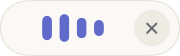

Панель диктовкиThe dictation bar
Пока вы говорите, Heardly показывает небольшую панель: по ней видно, что микрофон слышит голос, сколько идёт запись и какими клавишами остановить или отменить.While you speak, Heardly shows a small bar: it tells you the microphone hears you, how long the recording has been running, and which keys stop or cancel it.
Большая панельThe large bar


Волна показывает уровень звука: если она не двигается, пока вы говорите, Heardly вас не слышит — смотрите Микрофон и Bluetooth. Справа идёт таймер записи.
The waveform shows the input level. If it stays flat while you speak, Heardly cannot hear you — see Microphone and Bluetooth. The recording timer runs on the right.
Мини-панельThe mini bar

Мини-панель показывает только волну. Ей можно выбрать место: внизу экрана или прямо под значком Heardly в строке меню — тогда она совсем не мешает.
The mini bar shows only the waveform. You can place it either at the bottom of the screen or right under the Heardly icon in the menu bar, where it is out of the way entirely.
Где переключитьWhere to switch


Клавиши во время записиKeys while recording
| Горячая клавишаThe shortcut | Останавливает запись и вставляет текст.Stops recording and inserts the text. |
| esc | Отменяет: в поле ничего не попадёт, расшифровка останется в Истории.Cancels: nothing reaches the field, and the transcript stays in History. |